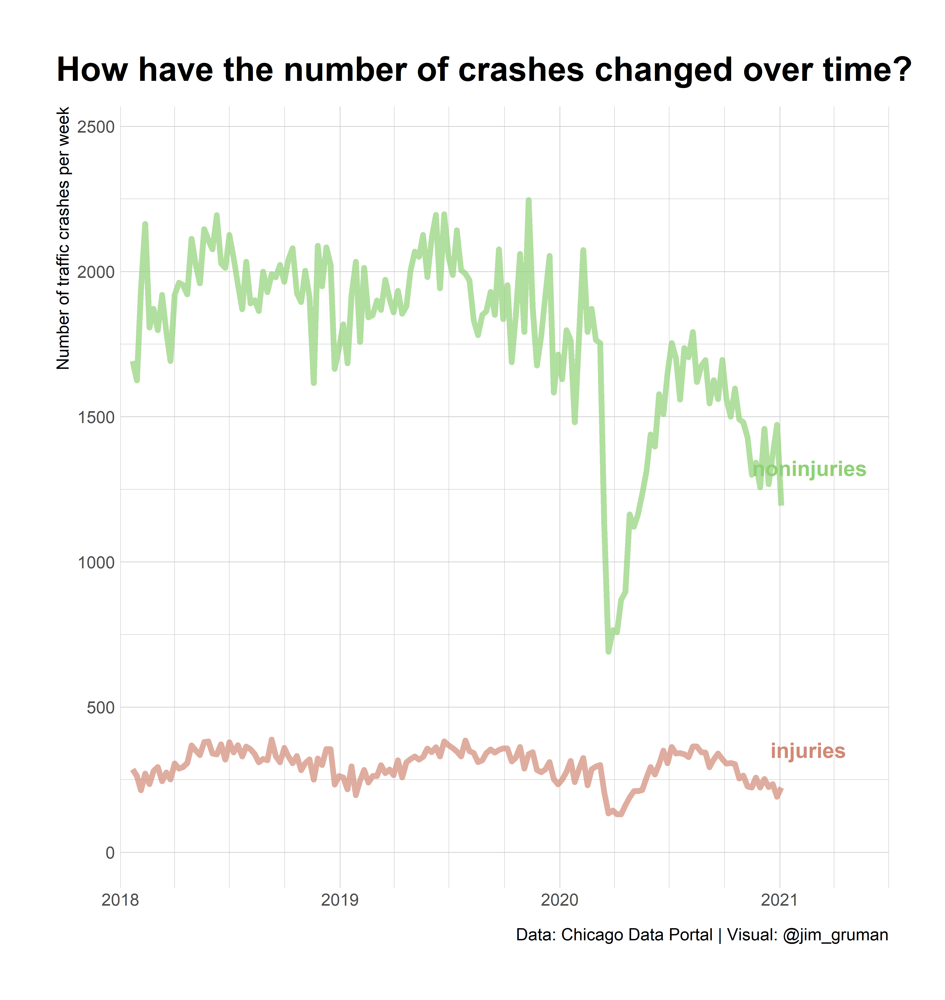
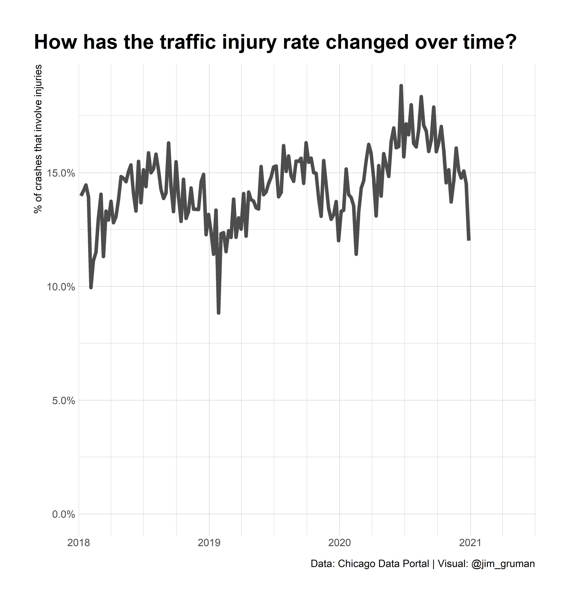
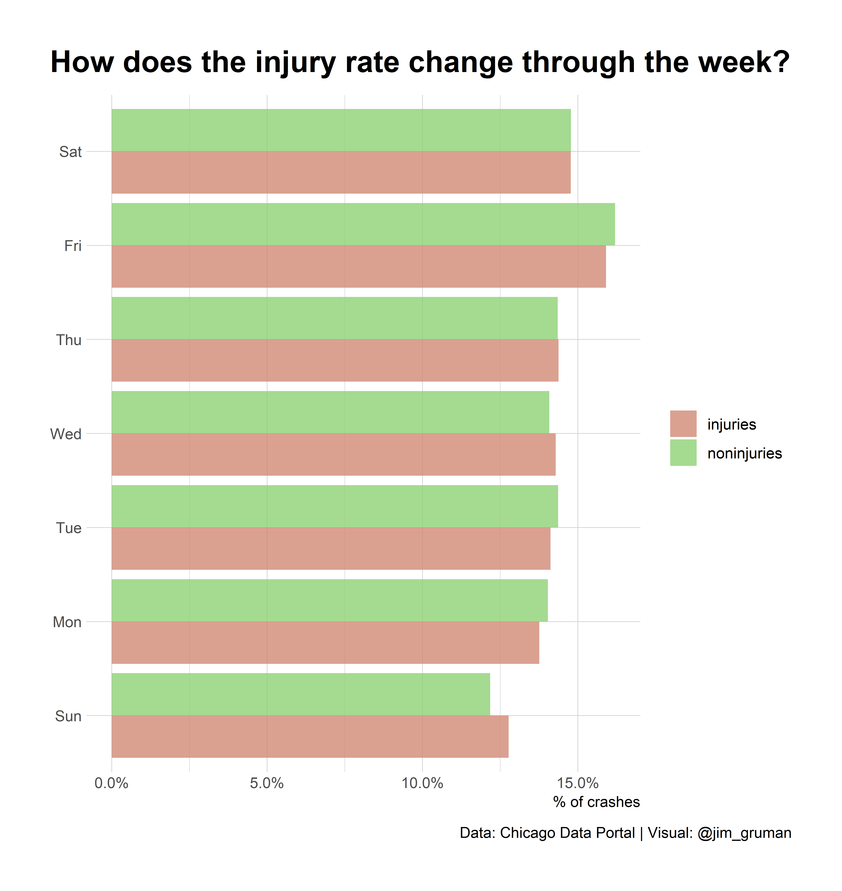
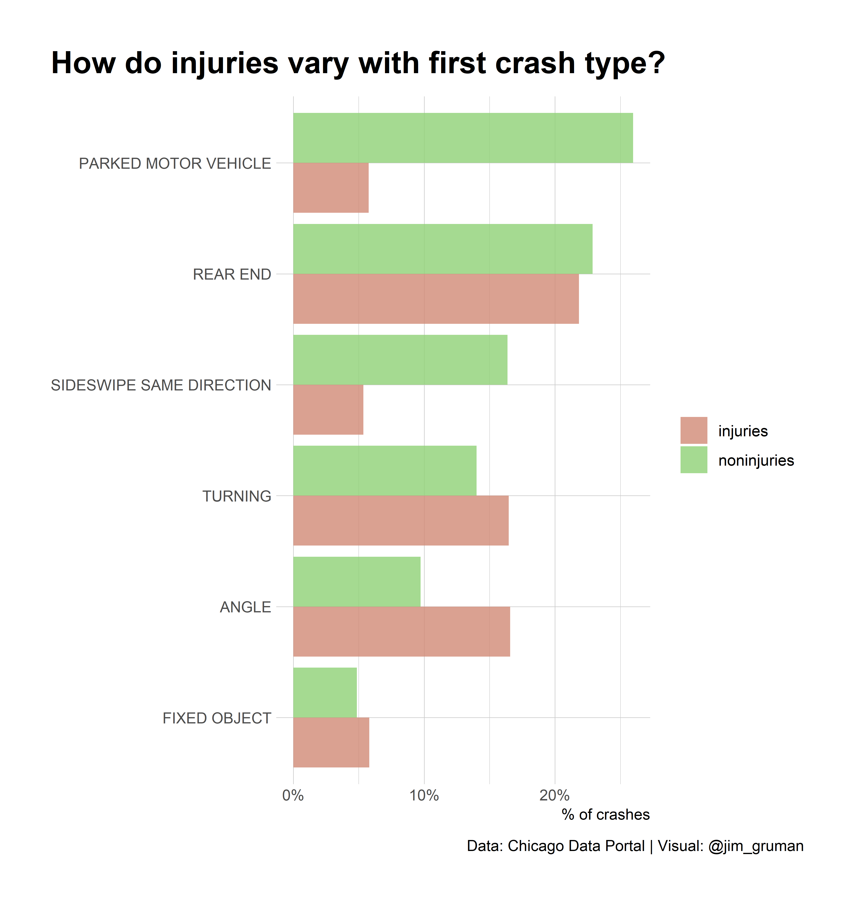
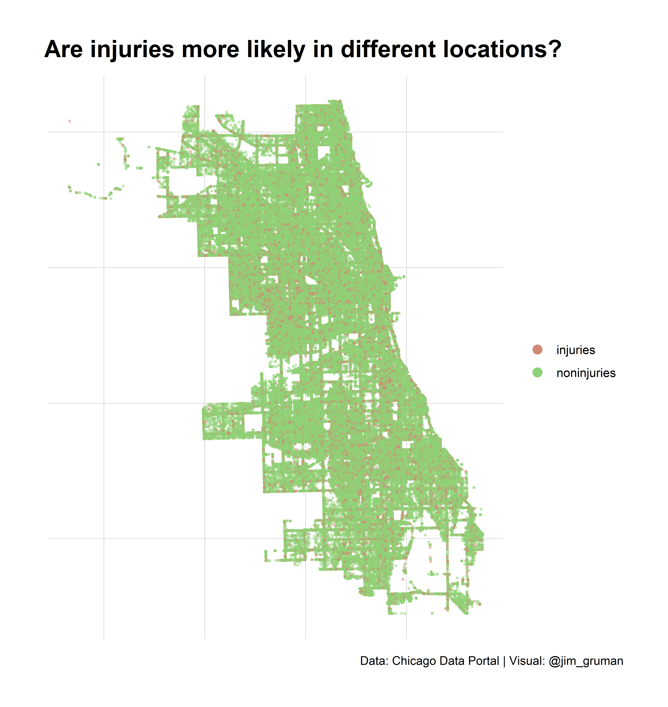
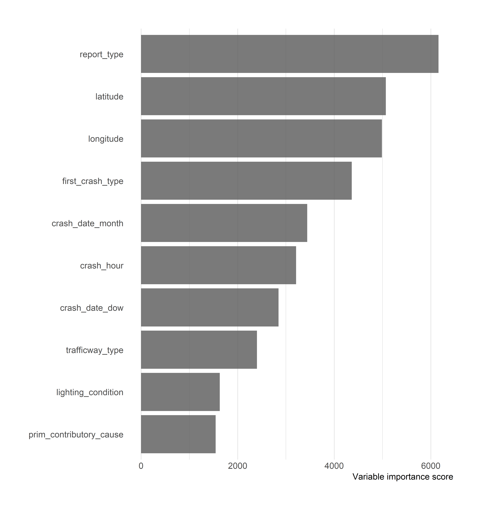
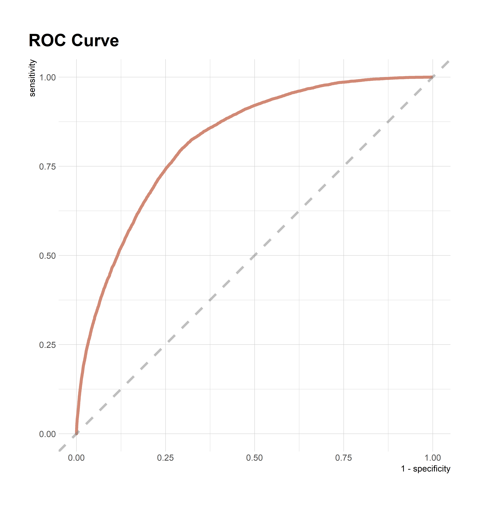

Last updated: 2021-01-15
Checks: 7 0
Knit directory: myTidyTuesday/
This reproducible R Markdown analysis was created with workflowr (version 1.6.2). The Checks tab describes the reproducibility checks that were applied when the results were created. The Past versions tab lists the development history.
Great! Since the R Markdown file has been committed to the Git repository, you know the exact version of the code that produced these results.
Great job! The global environment was empty. Objects defined in the global environment can affect the analysis in your R Markdown file in unknown ways. For reproduciblity it’s best to always run the code in an empty environment.
The command set.seed(20200907) was run prior to running the code in the R Markdown file. Setting a seed ensures that any results that rely on randomness, e.g. subsampling or permutations, are reproducible.
Great job! Recording the operating system, R version, and package versions is critical for reproducibility.
Nice! There were no cached chunks for this analysis, so you can be confident that you successfully produced the results during this run.
Great job! Using relative paths to the files within your workflowr project makes it easier to run your code on other machines.
Great! You are using Git for version control. Tracking code development and connecting the code version to the results is critical for reproducibility.
The results in this page were generated with repository version d77615e. See the Past versions tab to see a history of the changes made to the R Markdown and HTML files.
Note that you need to be careful to ensure that all relevant files for the analysis have been committed to Git prior to generating the results (you can use wflow_publish or wflow_git_commit). workflowr only checks the R Markdown file, but you know if there are other scripts or data files that it depends on. Below is the status of the Git repository when the results were generated:
Ignored files:
Ignored: .Rhistory
Ignored: .Rproj.user/
Ignored: analysis/rsconnect/
Ignored: data/03/
Ignored: fonts/
Ignored: rosm.cache/
Unstaged changes:
Modified: analysis/BackboneWatershed.Rmd
Note that any generated files, e.g. HTML, png, CSS, etc., are not included in this status report because it is ok for generated content to have uncommitted changes.
These are the previous versions of the repository in which changes were made to the R Markdown (analysis/ChicagoTrafficInjuries.Rmd) and HTML (docs/ChicagoTrafficInjuries.html) files. If you’ve configured a remote Git repository (see ?wflow_git_remote), click on the hyperlinks in the table below to view the files as they were in that past version.
| File | Version | Author | Date | Message |
|---|---|---|---|---|
| html | dfa948d | opus1993 | 2021-01-04 | Build site. |
| Rmd | 325ee4d | opus1993 | 2021-01-04 | wflow_publish(“analysis/ChicagoTrafficInjuries.Rmd”) |
| html | b95346f | opus1993 | 2021-01-04 | Build site. |
| Rmd | e59e031 | opus1993 | 2021-01-04 | wflow_publish(“analysis/ChicagoTrafficInjuries.Rmd”) |
Inspired by Julia Silge’s Predicting injuries for Chicago traffic crashes
Our goal here is to demonstrate how to use the tidymodels framework to model live-caught data on traffic crashes in the City of Chicago on injuries.
knitr::opts_chunk$set(
echo = TRUE,
fig.height = 7.402,
message = FALSE,
warning = FALSE,
cache = FALSE,
cache.lazy = FALSE,
df_print = "paged",
dpi = 300,
tidy = "styler"
)suppressPackageStartupMessages({
library(tidyverse)
library(lubridate)
library(here)
library(tidymodels)
library(RSocrata)
library(themis) # upsample/downsample for unbalanced datasets
library(baguette) # bagging models
})extrafont::loadfonts(quiet = TRUE)
theme_set(hrbrthemes::theme_ipsum_gs() +
theme(
plot.title.position = "plot",
plot.caption.position = "plot"
))We will load the latest data directly from the Chicago data portal. This dataset covers traffic crashes on city streets within Chicago city limits under the jurisdiction of the Chicago Police Department.
Let’s download the last three years of data to train our model.
years_ago <- today() - years(3)
crash_url <- glue::glue("https://data.cityofchicago.org/Transportation/Traffic-Crashes-Crashes/85ca-t3if?$where=CRASH_DATE > '{years_ago}'")
crash_raw <- as_tibble(read.socrata(crash_url))Data preparation
crash <- crash_raw %>%
arrange(desc(crash_date)) %>%
transmute(
injuries = if_else(injuries_total > 0, "injuries", "noninjuries"),
crash_date,
crash_hour,
report_type = if_else(report_type == "", "UNKNOWN", report_type),
num_units,
trafficway_type,
posted_speed_limit,
weather_condition,
lighting_condition,
roadway_surface_cond,
first_crash_type,
trafficway_type,
prim_contributory_cause,
latitude, longitude
) %>%
na.omit()crash %>%
mutate(crash_date = as_date(floor_date(crash_date, unit = "week"))) %>%
count(crash_date, injuries) %>%
filter(
crash_date != last(crash_date),
crash_date != first(crash_date)
) %>%
mutate(name_lab = if_else(crash_date == last(crash_date), injuries, NA_character_)) %>%
ggplot() +
geom_line(aes(as.Date(crash_date), n, color = injuries),
size = 1.5, alpha = 0.7
) +
scale_x_date(
labels = scales::date_format("%Y"),
expand = c(0, 0),
breaks = seq.Date(as_date("2018-01-01"),
as_date("2021-01-01"),
by = "year"
),
minor_breaks = "3 months",
limits = c(as_date("2018-01-01"), as_date("2021-07-01"))
) +
ggrepel::geom_text_repel(
aes(x = crash_date, y = n + 200, label = name_lab, color = injuries),
fontface = "bold",
size = 4,
direction = "y",
xlim = c(2022, NA),
hjust = 0,
segment.size = .7,
segment.alpha = .5,
segment.linetype = "dotted",
box.padding = .4,
segment.curvature = -0.1,
segment.ncp = 3,
segment.angle = 20
) +
scale_y_continuous(limits = (c(0, NA))) +
hrbrthemes::scale_color_ipsum() +
labs(
title = "How have the number of crashes changed over time?",
x = NULL, y = "Number of traffic crashes per week",
color = "Injuries?", caption = "Data: Chicago Data Portal | Visual: @jim_gruman"
) +
theme(legend.position = "")
This is not a balanced dataset, in that the injuries are a small portion of traffic incidents. Let’s look at the percentage.
crash %>%
mutate(crash_date = floor_date(crash_date, unit = "week")) %>%
count(crash_date, injuries) %>%
filter(
crash_date != last(crash_date),
crash_date != first(crash_date)
) %>%
group_by(crash_date) %>%
mutate(percent_injury = n / sum(n)) %>%
ungroup() %>%
filter(injuries == "injuries") %>%
ggplot(aes(as_date(crash_date), percent_injury)) +
geom_line(size = 1.5, alpha = 0.7) +
scale_y_continuous(limits = c(0, NA), labels = percent_format()) +
scale_x_date(
labels = scales::date_format("%Y"),
expand = c(0, 0),
breaks = seq.Date(as_date("2018-01-01"),
as_date("2021-01-01"),
by = "year"
),
minor_breaks = "3 months",
limits = c(as_date("2018-01-01"), as_date("2021-07-01"))
) +
hrbrthemes::scale_color_ipsum() +
labs(
x = NULL, y = "% of crashes that involve injuries",
title = "How has the traffic injury rate changed over time?",
caption = "Data: Chicago Data Portal | Visual: @jim_gruman"
)
crash %>%
mutate(crash_date = wday(crash_date, label = TRUE)) %>%
count(crash_date, injuries) %>%
group_by(injuries) %>%
mutate(percent = n / sum(n)) %>%
ungroup() %>%
ggplot(aes(percent, crash_date, fill = injuries)) +
geom_col(position = "dodge", alpha = 0.8) +
scale_x_continuous(labels = percent_format()) +
hrbrthemes::scale_fill_ipsum() +
labs(
x = "% of crashes", y = NULL, fill = NULL,
title = "How does the injury rate change through the week?",
caption = "Data: Chicago Data Portal | Visual: @jim_gruman"
)
crash %>%
count(first_crash_type, injuries) %>%
mutate(first_crash_type = fct_reorder(first_crash_type, n)) %>%
group_by(injuries) %>%
mutate(percent = n / sum(n)) %>%
ungroup() %>%
group_by(first_crash_type) %>%
filter(sum(n) > 1e4) %>%
ungroup() %>%
ggplot(aes(percent, first_crash_type, fill = injuries)) +
geom_col(position = "dodge", alpha = 0.8) +
hrbrthemes::scale_fill_ipsum() +
scale_x_continuous(labels = percent_format()) +
labs(
x = "% of crashes", y = NULL, fill = NULL,
title = "How do injuries vary with first crash type?",
caption = "Data: Chicago Data Portal | Visual: @jim_gruman"
)
crash %>%
filter(latitude > 0) %>%
ggplot(aes(longitude, latitude, color = injuries)) +
geom_point(size = 0.5, alpha = 0.4) +
labs(color = NULL) +
hrbrthemes::scale_color_ipsum() +
coord_map() +
guides(col = guide_legend(override.aes = list(size = 3, alpha = 1))) +
theme(axis.text.x = element_blank(), axis.text.y = element_blank()) +
labs(
x = NULL, y = NULL, fill = NULL,
title = "Are injuries more likely in different locations?",
caption = "Data: Chicago Data Portal | Visual: @jim_gruman"
)
This is all the information we will use in building our model to predict which crashes caused injuries.
Let’s start by splitting our data and creating cross-validation folds.
crash_split <- initial_split(crash, strata = injuries)
crash_train <- training(crash_split)
crash_test <- testing(crash_split)
crash_folds <- vfold_cv(crash_train, strata = injuries)Next, let’s create a model.
The feature engineering includes creating date features such as day of the week, handling the high cardinality of weather conditions, contributing cause, etc, and perhaps most importantly, downsampling to account for the class imbalance (injuries are more rare than non-injury-causing crashes).
crash_rec <- recipe(injuries ~ ., data = crash_train) %>%
step_date(crash_date) %>%
step_rm(crash_date) %>%
step_other(weather_condition, first_crash_type, trafficway_type,
trafficway_type, prim_contributory_cause,
other = "OTHER"
) %>%
step_downsample(injuries)
bag_spec <- bag_tree(min_n = 10) %>%
set_engine("rpart", times = 25) %>%
set_mode("classification")
crash_wf <- workflow() %>%
add_recipe(crash_rec) %>%
add_model(bag_spec)
crash_wf== Workflow ====================================================================
Preprocessor: Recipe
Model: bag_tree()
-- Preprocessor ----------------------------------------------------------------
4 Recipe Steps
* step_date()
* step_rm()
* step_other()
* step_downsample()
-- Model -----------------------------------------------------------------------
Bagged Decision Tree Model Specification (classification)
Main Arguments:
cost_complexity = 0
min_n = 10
Engine-Specific Arguments:
times = 25
Computational engine: rpart Let’s fit this model to the cross-validation resamples to understand how well it will perform.
doParallel::registerDoParallel()
crash_res <- fit_resamples(
crash_wf,
crash_folds,
control = control_resamples(save_pred = TRUE)
)What do the results look like?
collect_metrics(crash_res) # metrics on the training set# A tibble: 2 x 6
.metric .estimator mean n std_err .config
<chr> <chr> <dbl> <int> <dbl> <chr>
1 accuracy binary 0.730 10 0.00107 Preprocessor1_Model1
2 roc_auc binary 0.822 10 0.00101 Preprocessor1_Model1Not bad.
Let’s now fit to the entire training set and evaluate on the testing set.
crash_fit <- last_fit(crash_wf, crash_split)
collect_metrics(crash_fit) # metrics on the test set, look for overfitting# A tibble: 2 x 4
.metric .estimator .estimate .config
<chr> <chr> <dbl> <chr>
1 accuracy binary 0.732 Preprocessor1_Model1
2 roc_auc binary 0.823 Preprocessor1_Model1Spot on.
Which features were most important in predicting an injury?
crash_imp <- crash_fit$.workflow[[1]] %>%
pull_workflow_fit()
crash_imp$fit$imp %>%
slice_max(value, n = 10) %>%
ggplot(aes(value, fct_reorder(term, value))) +
geom_col(alpha = 0.8) +
hrbrthemes::scale_fill_ipsum() +
labs(x = "Variable importance score", y = NULL) +
theme(panel.grid.major.y = element_blank())
How does the ROC curve for the testing data look?
collect_predictions(crash_fit) %>%
roc_curve(injuries, .pred_injuries) %>%
ggplot(aes(x = 1 - specificity, y = sensitivity)) +
geom_line(size = 1.5, color = hrbrthemes::ipsum_pal()(1)) +
geom_abline(
lty = 2, alpha = 0.5,
color = "gray50",
size = 1.2
) +
coord_equal() +
labs(title = "ROC Curve")
crash_wf_model <- crash_fit$.workflow[[1]]
# crash_wf_model <- butcher::butcher(crash_fit$.workflow[[1]])This is an object we can make predictions with. For example, is this particular crash predicted to have any injuries?
predict(crash_wf_model, crash_test[222, ])# A tibble: 1 x 1
.pred_class
<fct>
1 noninjuriesNow let’s save this model and the metrics to be used later in our model.
saveRDS(crash_wf_model, here::here("data", "crash-wf-model.rds"))
collect_metrics(crash_res) %>%
write_csv(here::here("data", "crash-model-metrics.csv"))
sessionInfo()R version 4.0.3 (2020-10-10)
Platform: x86_64-w64-mingw32/x64 (64-bit)
Running under: Windows 10 x64 (build 19041)
Matrix products: default
locale:
[1] LC_COLLATE=English_United States.1252
[2] LC_CTYPE=English_United States.1252
[3] LC_MONETARY=English_United States.1252
[4] LC_NUMERIC=C
[5] LC_TIME=English_United States.1252
attached base packages:
[1] stats graphics grDevices utils datasets methods base
other attached packages:
[1] baguette_0.1.0 themis_0.1.3 RSocrata_1.7.10-6 yardstick_0.0.7
[5] workflows_0.2.1 tune_0.1.2 rsample_0.0.8 recipes_0.1.15
[9] parsnip_0.1.4 modeldata_0.1.0 infer_0.5.3 dials_0.0.9
[13] scales_1.1.1 broom_0.7.3 tidymodels_0.1.2 here_1.0.1
[17] lubridate_1.7.9.2 forcats_0.5.0 stringr_1.4.0 dplyr_1.0.2
[21] purrr_0.3.4 readr_1.4.0 tidyr_1.1.2 tibble_3.0.4
[25] ggplot2_3.3.3 tidyverse_1.3.0 workflowr_1.6.2
loaded via a namespace (and not attached):
[1] readxl_1.3.1 mlr_2.18.0 backports_1.2.1
[4] fastmatch_1.1-0 systemfonts_0.3.2.9000 plyr_1.8.6
[7] splines_4.0.3 listenv_0.8.0 digest_0.6.27
[10] foreach_1.5.1 htmltools_0.5.1 earth_5.3.0
[13] fansi_0.4.1 magrittr_2.0.1 checkmate_2.0.0
[16] BBmisc_1.11 unbalanced_2.0 doParallel_1.0.16
[19] globals_0.14.0 extrafont_0.17 modelr_0.1.8
[22] gower_0.2.2 R.utils_2.10.1 extrafontdb_1.0
[25] hardhat_0.1.5 colorspace_2.0-0 ggrepel_0.9.0
[28] rvest_0.3.6 haven_2.3.1 xfun_0.20
[31] libcoin_1.0-6 crayon_1.3.4 jsonlite_1.7.2
[34] survival_3.2-7 iterators_1.0.13 glue_1.4.2
[37] gtable_0.3.0 ipred_0.9-9 R.cache_0.14.0
[40] Rttf2pt1_1.3.8 maps_3.3.0 mvtnorm_1.1-1
[43] DBI_1.1.0 Rcpp_1.0.5 plotrix_3.7-8
[46] Cubist_0.2.3 mapproj_1.2.7 GPfit_1.0-8
[49] Formula_1.2-4 lava_1.6.8.1 prodlim_2019.11.13
[52] httr_1.4.2 FNN_1.1.3 ellipsis_0.3.1
[55] farver_2.0.3 pkgconfig_2.0.3 R.methodsS3_1.8.1
[58] ParamHelpers_1.14 nnet_7.3-14 sass_0.3.0
[61] dbplyr_2.0.0 utf8_1.1.4 labeling_0.4.2
[64] reshape2_1.4.4 tidyselect_1.1.0 rlang_0.4.10
[67] DiceDesign_1.8-1 later_1.1.0.1 TeachingDemos_2.12
[70] munsell_0.5.0 cellranger_1.1.0 tools_4.0.3
[73] cli_2.2.0 generics_0.1.0 evaluate_0.14
[76] yaml_2.2.1 rematch2_2.1.2 knitr_1.30
[79] fs_1.5.0 RANN_2.6.1 future_1.21.0
[82] whisker_0.4 mime_0.9 R.oo_1.24.0
[85] xml2_1.3.2 compiler_4.0.3 rstudioapi_0.13
[88] curl_4.3 reprex_0.3.0 lhs_1.1.1
[91] bslib_0.2.3.9000 stringi_1.5.3 plotmo_3.6.0
[94] ps_1.5.0 gdtools_0.2.3 hrbrthemes_0.8.6
[97] memuse_4.1-0 lattice_0.20-41 Matrix_1.3-2
[100] styler_1.3.2 vctrs_0.3.6 pillar_1.4.7
[103] lifecycle_0.2.0 furrr_0.2.1 jquerylib_0.1.3
[106] data.table_1.13.6 httpuv_1.5.5 R6_2.5.0
[109] promises_1.1.1.9001 C50_0.1.3.1 parallelly_1.23.0
[112] codetools_0.2-18 MASS_7.3-53 assertthat_0.2.1
[115] rprojroot_2.0.2 ROSE_0.0-3 withr_2.3.0
[118] parallel_4.0.3 hms_0.5.3 grid_4.0.3
[121] rpart_4.1-15 timeDate_3043.102 class_7.3-17
[124] inum_1.0-1 rmarkdown_2.6.0 git2r_0.28.0
[127] parallelMap_1.5.0 partykit_1.2-11 pROC_1.17.0.1